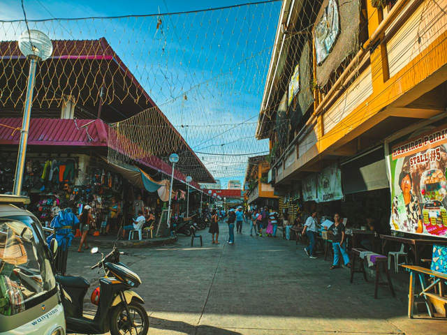

Tuesday, 24 November 2026, is Dumaguete's 78th Charter Day, the anniversary of the city's creation in 1948. It is a special holiday within the city every year, set by national law, so classes and government offices in Dumaguete stop for the day while the rest of the country carries on as normal.
For residents it is a day off with a mass, a parade and fireworks over the water. For visitors it can be either a bonus or a nuisance, depending on what you planned. Roads close in the afternoon, offices you might need are shut, and the boulevard fills up at night. The day after, Wednesday the 25th, is the feast of Saint Catherine of Alexandria, the city's patron saint, which turns the middle of the week into a two-day local celebration.
Here is how the day usually runs, what to expect if you are in town, and how to plan around it. The city releases its official programme close to the date, so treat times below as a guide based on last year's schedule until the 2026 version is out.

Why 24 November?
Dumaguete became a city through Republic Act No. 327, passed in 1948, which turned the old municipality into a chartered city. In 1992, Republic Act No. 7253 made every 24 November a special holiday in Dumaguete to observe its charter day. That law covers only the city, so neighbouring towns such as Sibulan, Bacong and Valencia keep normal schedules unless they announce otherwise.
Because the holiday is fixed by law, it falls on 24 November every year whatever the day of the week. In 2026 that is a Tuesday, which makes it easy to stretch into a long weekend if you take Monday off as well.
How the Day Usually Runs
The 2025 programme gives a good picture of a typical Charter Day. Expect something close to this in 2026, with times confirmed nearer the date.
Morning: High Mass at the cathedral
The day opens with a Charter Day High Mass at 8 a.m. at the Saint Catherine of Alexandria Cathedral on Perdices Street. The cathedral is the oldest stone church on Negros, finished in 1776, and the old belfry beside it is the city's best-known landmark. Visitors are welcome at the mass; dress modestly and arrive early if you want a seat.
Afternoon: the civic parade
Schools, barangays, government offices and uniformed groups march through the city in the civic-military parade. In 2025, contingents assembled on the Looc bypass road from 2 p.m. and set off at 3 p.m. This is when road closures bite. Tricycles and cars get rerouted around the downtown streets, so if you need to cross the city in the afternoon, go before lunch or wait until the parade has passed.
Evening: shows, contests and fireworks
Last year the evening split across three venues. A celebrity basketball game ran at the Lamberto L. Macias Sports and Cultural Center, the balak poetry contest and a teen singing competition filled Quezon Park, and Rizal Boulevard hosted a variety show at 8 p.m. followed by a pyro-musical competition at 10 p.m. The fireworks are the main event for most families. The boulevard gets very crowded from early evening, and the seawall gives the clearest view of the water.
Charter Day and the Sandurot Festival
Since 2025, the city has run its Sandurot Festival in the days just before Charter Day, so 24 November now caps a full week of street dancing, contests and night concerts. If you want the dancing as well as the fireworks, our Sandurot Festival 2026 guide covers the likely dates and how to watch the showdown. Arriving by the weekend of 21 and 22 November lets you catch both.
What Is Open and What Is Closed
City and national government offices in Dumaguete close, and so do schools. That includes the city hall, so do not plan permit renewals, document pick-ups or similar errands for that day. Private businesses decide for themselves under the usual rules for special holidays. Malls, restaurants, cafés, hotels and the market generally keep trading, and many are busier than usual. Banks and smaller shops vary, so check with them if you have something that cannot wait.
Ferries, buses and flights run on their normal schedules, since the holiday is local. Expect heavier traffic at the port and bus terminal around the long weekend, and book seats early if you are heading to Siquijor or back to Cebu on the 25th or 26th.
The Feast of Saint Catherine on 25 November
The following day belongs to the city's patron saint. It is a quieter, more religious day built around masses at the cathedral. In past years, work and classes in the city have also been suspended on 25 November, but that depends on a separate announcement each year, so look out for an announcement before assuming another day off.
Tips if You Are in Town
Book rooms near the boulevard early. Charter Day and the end of Sandurot bring returning residents and visitors from around the province, and central hotels fill first.
Do your errands on the Monday. Anything involving a government office should be done by the 23rd, or left until the 26th.
Walk rather than ride in the afternoon and evening. Downtown Dumaguete is compact, and on foot you avoid the rerouting altogether.
Plan a cheap day out of the city if crowds are not your thing. The holiday does not apply in nearby towns, so beaches in Dauin or the falls in Valencia are open as usual and quieter than the boulevard. The Dumaguete on a budget guide has costs for side trips and getting around.
Check the official programme the day before. The city posts its final schedule and traffic advisory on its website and social pages, and times often shift.
A Day Worth Timing a Visit Around
Seventy-eight years after Dumaguete became a city, Charter Day is still the one date when the whole place turns out at once: the morning mass, the slow parade, and the boulevard packed for the fireworks. If you are already planning a trip to the south of Negros in late November, aim for the 21st to the 25th. You get Sandurot, Charter Day and the patron saint's feast in a single stretch, and a good sense of how the city celebrates itself.
Sources
Republic Act No. 7253: Special holiday for the City of Dumaguete – The Corpus Juris
Republic Act No. 327 (1948) – Lawyerly
Sandurot Festival 2025 Schedule of Activities – Dumaguete.com, 13 November 2025
Saint Catherine of Alexandria Cathedral in Dumaguete City – The Old Churches

Comments
No comments yet. Been here recently? Share a tip or ask a question.
Leave a Reply